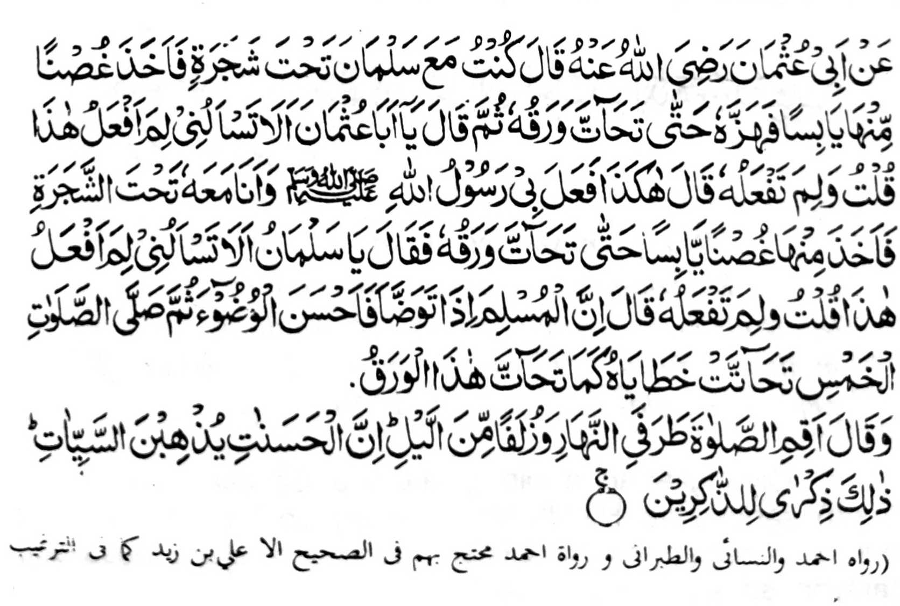
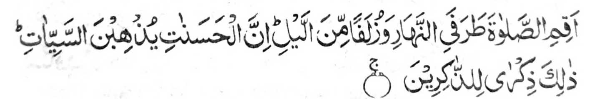
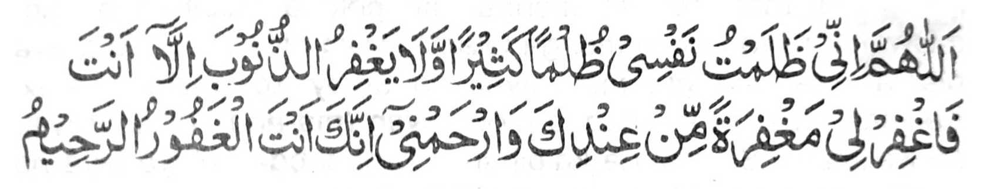

Miyaka po-on ko Abu Uthman (Radhiallaho ‘Anho) a pitharo iyan, “Miyaka isa na ped aken so Salman (Radhiallaho ‘Anho) ko atag o kayo. Kiyapetan niyan so miyalayon a sapak a kayo na kiyokhog iyan taman sa miyatatak so manga ra-on niyan. Pitharo iyan raken, ‘Hay, Abu Uthman, bangka raken di pagiza-an o ino akena-i gi-ing gola-ola-a?’ Pitharo aken, ‘Inongka nan gi-ing gola-ola-a?’
Pitharo iyan, ‘Manden na-i a pinggola-ola raken o Rasulollah (Sallallaho ‘Alaihi wa Sallam) ko masa a ped aken seka niyan ko atag o kayo. Komiyapet sekaniyan sa gango a sapak na kiyokhog iyan taman sa so manga ra-on niyan na miyanga tatatak. Pitharo iyan raken, “Hay, Salman (Radhiallaho ‘Anho), bangka raken di pagiza-an o ino akena-i gi-ing gola-ola-a?” Pitharo aken, “Inongka nan gi-ing gola-ola-a?” Pitharo iyan, “Mata-an a so Muslim a magabedas phiya-piya na oriyan niyan na zambayangan niyan so lima a wakto, na so manga dosa niyan na phanga-tatatak sa lagido kapekha-tatatak angka iya manga ra-on.” Na oriyan niyan na biyatiya iyan angka-iya Ayaat sa Qur’an:

“Na pamayandegen ka so Sambayang ko mbala ko kadaon-dao, go so saba-ad ko gagawi-i. Mata-an a so manga pipiya na khalalas iyan so manga rarata. Giyanan man i ‘endao ko pephamakinda-o.”’” (Surah Hud: 114)
Giyangkanan a pinggola-ola o Salman (Radhiallaho ‘Anho) sangka-iya Hadith na miya-ilay so kala a babaya o manga Sahabah ko Rasulollah (Sallallaho ‘Alaihi wa Sallam). Lalayon so kapekhababaya iran ko kapethademi ko manga pipiya a miyanggola-ola iran ko masa a zisi-i kiran so Rasulollah (Sallallaho ‘Alaihi wa Sallam). Siran, na si-i ko kaphagaloya iran non, na soden so tanto a kiya-ilaya iran non sangkoto a masa na aya iran den pezowa-an.
Tanto a maregen o ba panothola so langon o manga Hadith o Rasulollah (Sallallaho ‘Alaihi wa Sallam) a piyagosay niyan so manga kalbihan o Sambayang a go so miya-aloy niyan so kakharila-i ko manga tao a somisiyapon. Lagid o mona a kiya-aloy niyan, a so manga Olama na tiyaman niran bo so rila ko manga Saghair (manga i-ito a dosa), ogaid na sangka-iya a Hadith na da niyan tago-i sa tamana. So ‘Alim a ama aken na dowa a sabap a miyatharo iyan:
Ilayangka angka-iya kaposan a pangeni ko Sambayang:

“Ya Allah, sabenar a miyalalim aken so ginawa ko sa kalalim a tanto a mala go da-a merila ko dosa inonta Seka. Na rila-iya kongka sa rila pho-on Reka go kalimo-on akong Ka. Mata-an a Seka na mala-i gagao a Makalimo-on.”
Giyangka iya a miya-aloy a Hadith, na miya aloy ron na so Abdas na pephiya-piya-an. Giyoto-i sabap sa khakenal tano so manga bitikan o kapagabdas na taros a inggolalan tano siran. Ibarat o Miswak. Sunnah ko Abdas, ogaid na lalayon indadarainon. Miya-aloy sa Hadith a so manga Sambayang a ipamayandeg ko oriyan o kapemiswak na makalelebi sa pito polo ka pangkatan ko sambayang a da-on so kap-miswak.
Si-i pen ko isa a Hadith, na so kap-miswak na tanto ron a inipami-is, na giyangka iya a kha-aloy a manga kalebihan na pantaga-i ko kap-miswak:
Di maminos so manga pito polo a kalbihan o kap-miswak a miya aloy o manga Olama. Miya-aloy a so tao a aya olaola niyan na gi-i memiswak na amay ko phatay na so Kalimah na zisi-i ko manga modol iyan (ma-ana khisabot iyan so Kalimah).
So manga kalbihan o kapagabdas phiya-piya na tanto a madakel. Miya aloy sa Hadith a so manga angga-ota a phera-oten a abdas na zigay ko Gawi-i a Kaphangokom, na sabap si-i a kakhakilala-a o Rasulollah (Sallallaho ‘Alaihi wa Sallam) ko manga Ummat iyan.